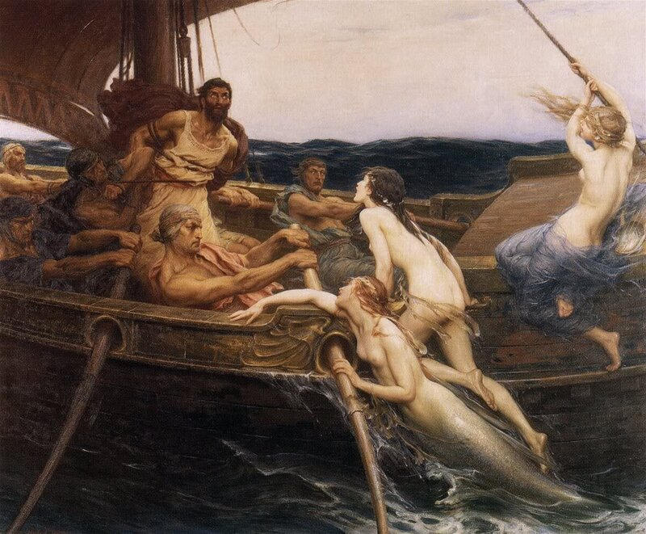
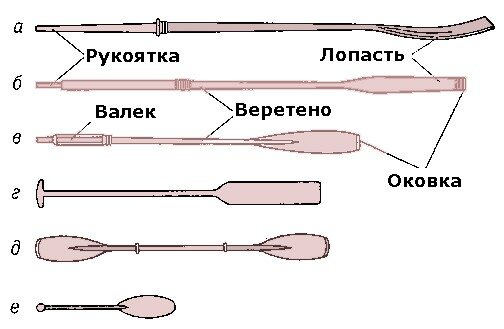
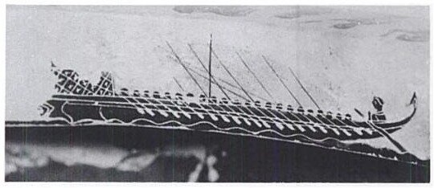

Ты куда, Одиссей?

Мы уже долго говорим о галерах, но практически не касались основного ее приспособления, ее движителя – ВЕСЛА. При всей простоте этого деревянного инструмента, рассказать о нем можно очень много. В начале работы я уже высказывал свое отношение к нашей энциклопедии и военно-морским словарям последнего разлива в части, касающейся галер. Это в полной мере относится и к статьям о весле. Военно-морской словарь (М., 1990) о галерных веслах пишет: «Галерное весло (ист.) длинное (до 12 м) весло с утолщенное рукоятью со скобами для захвата руками гребцов; предназначено для передвижения галер. Одним галерным веслом гребли до 6 человек.» Мы с вами уже несколько месяцев говорим о системе гребли alla sensile, когда одним веслом на галере гребет один человек. Но, как я понимаю, раскрыть сущность систем гребли в морском словаре не хотят (много букав!), ограничиваясь одним вырванным из истории образцом. Приблизительность нашей энциклопедической системы поражает. Да и в языке народном мы многое растеряли. Вон у Даля: «ВЕСЛО (вм. везло, от везти) гребло, гребок, гребь; шест с лопастью, для гребли на воде… Хорошее гребное весло состоит из пера, лопасти, валька (детки) и рукоятки (пальца, хватки); коротенькое весло, не вкладываемое в уключину, назыв. гребком; большое весло, на барке, служащее и рулем: потес, бабайка, слопец, лопастина, навес… На веслах плывут или идут.» Сейчас ни детку, ни хватку уже не встретишь в нашей речи.
Устройство весла описывается лишь несколькими терминами, как на этой иллюстрации из БСЭ третьего издания:

а типы весел: а – распашное академическое, б — распашное шлюпочное; в — вальковое; г — речное с поперечной рукояткой; д — байдарочное; е — гребок..
Шлюпочные безвальковые весла, не имеющие утолщения (валька) на веретене, могут быть парными, предназначенными для гребли одновременно двумя веслами одним гребцом (например, на тузике) или распашными – когда каждым веслом гребет один человек. Распашные весла имеют значительную длину от места опоры в уключине до рукоятки, что позволяет грести двумя руками. Шлюпочное вальковое весло имеет утолщенную часть веретена многогранной формы между рукоятью и местом упора на уключину.
Этой информацией о современных веслах пожалуй и ограничимся. Перейдем к веслам галерным. Конечно же, весло не пришло на флот вместе с галерой, но явилось продуктом всего предшествующего развития гребных кораблей.
Так как скорость быстрейших образцов античной триремы так и не была превзойдена в ходе дальнейшего развития гребных судов, ее весла должны были быть настолько совершенны, что даже в наши дни было бы трудно их изготовить, имея те же инструменты и материалы. Весельные мастера Древней Греции, даже не прибегая к помощи своих современников-математиков, через несколько поколений проб и ошибок пришли к такой конструкции деревянного весла, которое дают самые современные компьютерные программы.
Из классической литературы нам известен способ изготовления весел путем последовательного снятия коаксиальных слоев со ствола молодого деревца (elate) греческой пихты (Abies cephalonica Loudon - Пихта кефалинийская). У Гомера, при описании плавания Одиссея в районе острова сирен, есть такие строки:
αὐτίκ᾽ ἔπειτ᾽ ἄνεμος μὲν ἐπαύσατο ἠδὲ γαλήνη
ἔπλετο νηνεμίη, κοίμησε δὲ κύματα δαίμων.
ἀνστάντες δ᾽ ἕταροι νεὸς ἱστία μηρύσαντο
καὶ τὰ μὲν ἐν νηὶ γλαφυρῇ θέσαν, οἱ δ᾽ ἐπ᾽ ἐρετμὰ
ἑζόμενοι λεύκαινον ὕδωρ ξεστῇς ἐλάτῃσιν.
«Одиссея», Песнь двенадцатая
В переводе В. В. Вересаева это выглядит так.
Тут неожиданно ветер утих, неподвижною гладью
Море простерлось вокруг: божество успокоило волны.
Встали товарищи с мест, паруса корабля закатали,
Бросили в трюм их, а сами, к уключинам сев на скамейки,
Веслами стали взбивать на водной поверхности пену.
Мы уже неоднократно замечали, что делать какие-либо выводы о технических терминах по художественным переводам произведений занятие бесперспективное. Вот и здесь. В последней строке приведенного отрывка из первоисточника содержится масса информации. Указывается не только на способ изготовления весел (ξεστῇς, ξεστός – обструганный), но и на сорт древесины (ἐλάτῃσιν , ἐλάτη – греческая пихта). Обструганный и отполированный ствол кефалинийской пихты у Гомера является синонимом весла. Именно такие весла изображены на полотне Герберта Джеймса Дрейпера "Одиссей и сирены", помещенном в начале поста.
Мы встречаем неоднократно различные формы весел на изображениях, сделанных на древнегреческих вазах и барельефах, но не известно ни одного изображения лопасти весла триремы. Имеющиеся же изображения достаточно абстрактны и стилизованы. Вот на следующем изображении с чернофигурной вазы (550-530 гг. до н.э., оригинал находится в Лувре) о веслах пентеконтора можно сказать, что лопасти у них относительно короткие и достаточно широкие.

Больше информации, как бы мы ни старались, из этого изображения не выжать. Но мы имеем, к счастью, несколько источников, которые проливают больше света на весла той эпохи. О них мы поговорим в следующем посте.